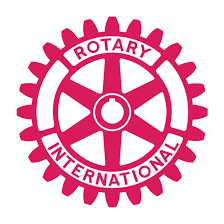

My Current Projects and Societies

IEEE
As an Event Manager for IEEE IGDTUW, I have been responsible for planning, coordinating, and executing a wide range of technical and non-technical events. My role involves managing logistics, ensuring smooth communication between teams, and creating structured workflows that contribute to the success of each event. This experience has strengthened my leadership, organizational, and problem-solving skills while allowing me to contribute meaningfully to the growth of the IEEE community on campus.
Hack With India
As an Event Manager and PR Member of Hack With India IGDTUW, I oversee both the planning and execution of events while also managing effective communication and outreach. My responsibilities include coordinating event logistics, collaborating with different teams, and ensuring that every initiative runs smoothly from concept to completion. On the PR side, I focus on building visibility, engaging participants, and maintaining a strong external presence for the club. This dual role has strengthened my leadership, communication, and organizational skills while contributing to the growth and impact of Hack With India on campus.

Rotaract Club
As a member of the Skill Development Team at the Rotaract Club IGDTUW, I contribute to initiatives aimed at bringing joy, support, and meaningful experiences to people in need. Our team works closely with orphans, senior citizens, and other communities that deserve care and companionship. Through interactive sessions, activities, and skill-building programs, we strive to create a positive impact and make their time with us truly memorable. Being part of this team has strengthened my sense of empathy, responsibility, and commitment to giving back to society.

Bhav Debate Circle
As a member of the Bhav Debate Circle at IGDTUW, I actively participate in discussions, debates, and analytical sessions that help sharpen my critical thinking and communication skills. Being part of this community allows me to explore diverse perspectives, articulate my thoughts confidently, and engage in meaningful intellectual conversations. It has strengthened my ability to reason and express ideas effectively while helping me grow as a more informed and thoughtful individual.